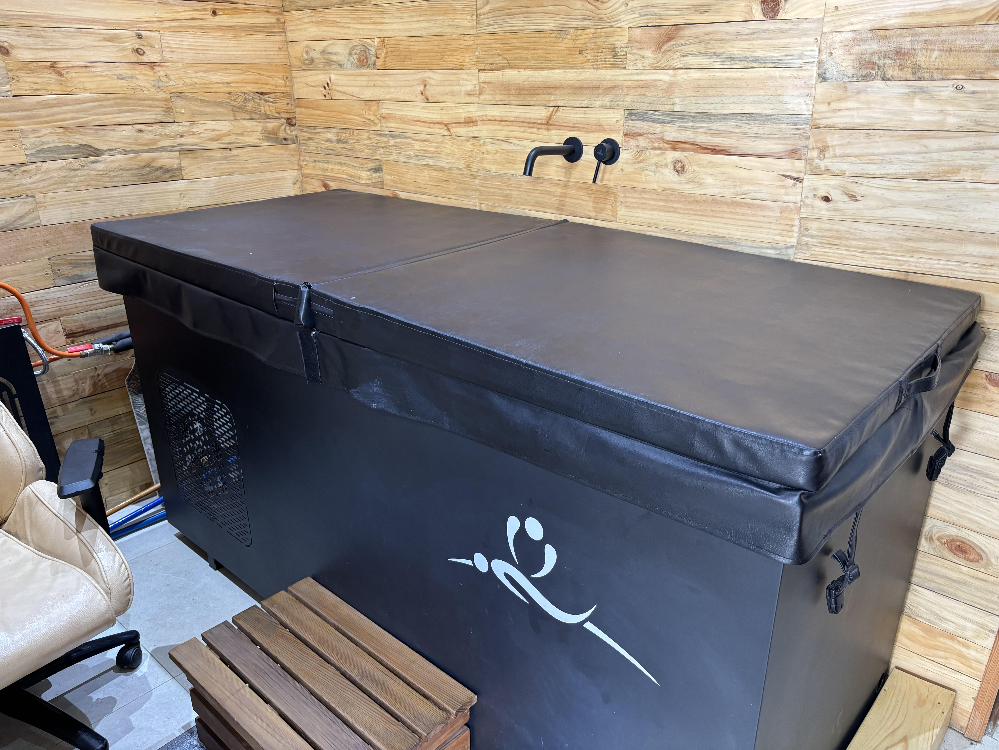
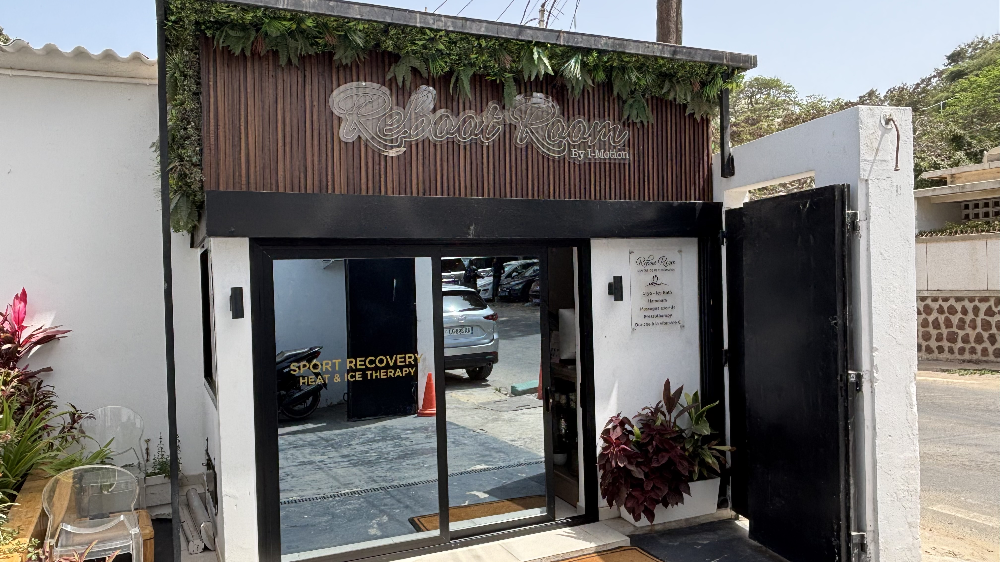
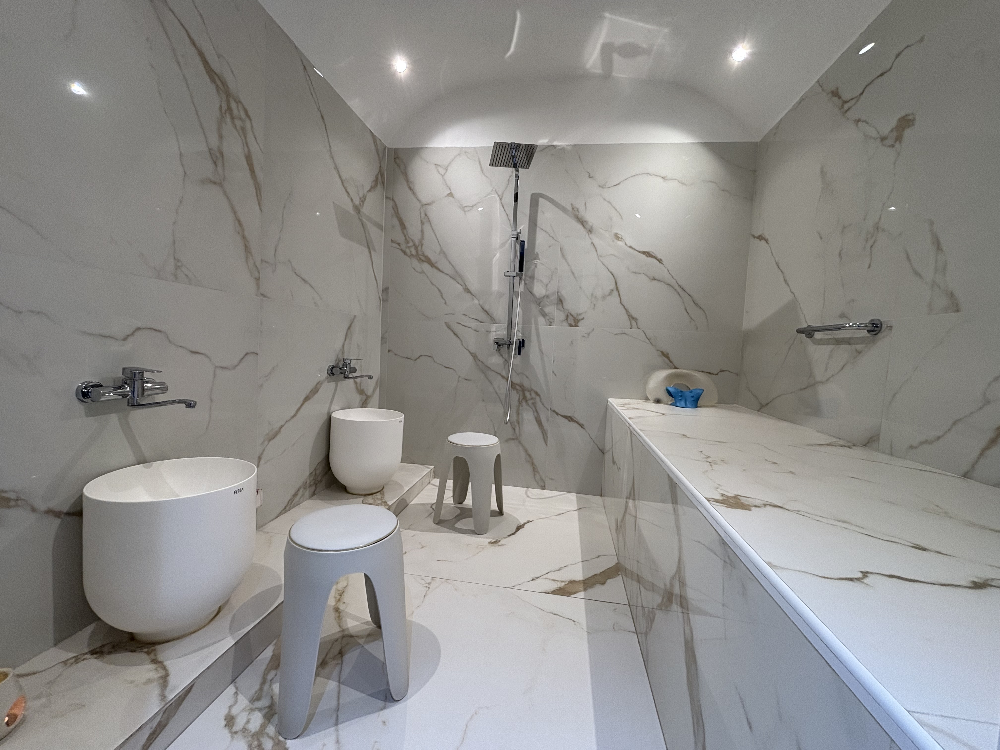
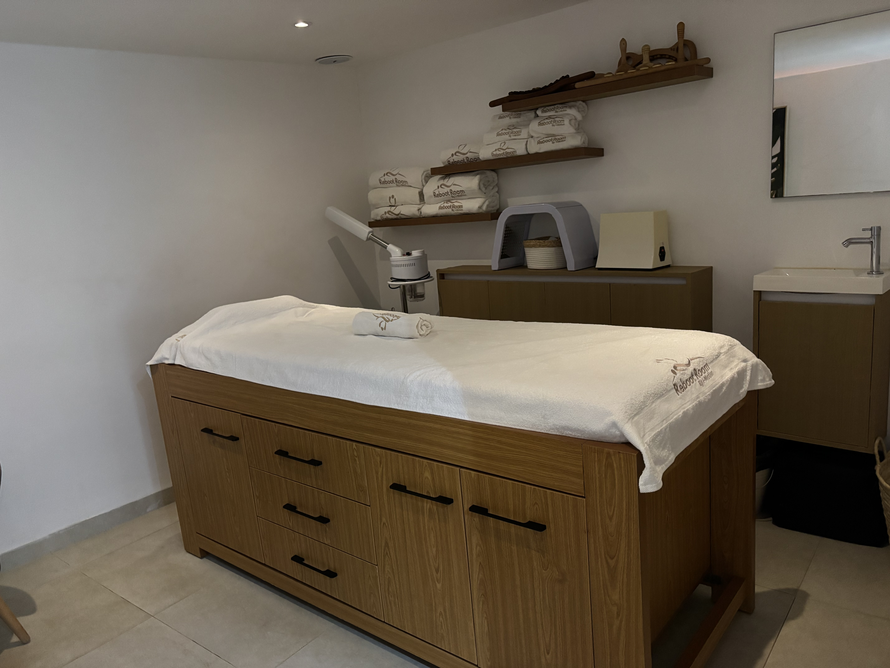
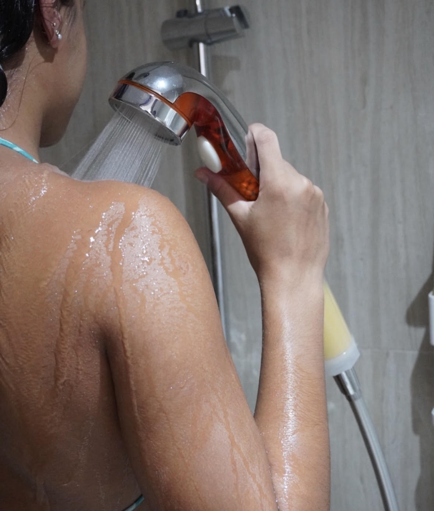

Récupérer. Respirer. Performer.
Découvrez un espace moderne dédié au bien-être, à la récupération sportive et à la performance physique sur la Corniche de Dakar.
Expérience signature
Cryo & Ice Bath
Plongez dans une expérience de récupération intense et revitalisante. Le froid aide le corps à réduire les sensations de fatigue, à relancer la circulation et à favoriser une meilleure récupération après l’effort.
Idéal après le sport, une période de stress ou simplement pour retrouver une sensation de légèreté, le Cryo & Ice Bath stimule le mental, apaise le corps et renforce la sensation d’énergie.
Réserver cette expérience





Relaxation profonde
Hammam
Offrez à votre corps un moment de relâchement total dans une atmosphère chaude et enveloppante. La chaleur du hammam aide à détendre les muscles, à libérer les tensions et à favoriser une sensation immédiate d’apaisement.
Véritable rituel de récupération et de bien-être, le hammam contribue à purifier le corps, améliorer la respiration et retrouver une sensation de calme profond.
Réserver cette expérienceRécupération musculaire
Massages
Pensé pour les corps actifs, le massage aide à relâcher les tensions, améliorer la mobilité et favoriser une meilleure récupération musculaire après l’effort.
Il accompagne les sportifs, les personnes stressées ou celles qui ressentent des zones de raideur. Chaque séance permet de retrouver plus de confort, de souplesse et une sensation de légèreté.
Réserver cette expérience


Drainage & récupération
Pressothérapie
Grâce à des pressions d’air ciblées, la pressothérapie stimule la circulation et procure une sensation immédiate de jambes légères et de récupération profonde.
Cette technologie aide à réduire les sensations de fatigue, favoriser le drainage et améliorer le confort musculaire après le sport ou les longues journées actives.
Réserver cette expérienceSoin revitalisant
Douche Vitamine C
La douche à la vitamine C transforme un moment simple en véritable rituel de fraîcheur. Elle aide à neutraliser les effets du chlore, adoucit la peau et laisse une sensation plus confortable après la séance.
Idéale après le hammam, le sport ou un soin de récupération, elle apporte une touche finale légère, sensorielle et revitalisante à votre expérience bien-être.
Réserver cette expérience


Tarifs
Nos expériences
Choisissez une séance ciblée ou un parcours complet selon votre besoin : récupération, détente, performance ou rituel hammam.
Recovery
Cryo / Ice Bath · Pressothérapie · Douche Vitamine C
24 000 FCFATherapy
Hammam · Cryo / Ice Bath · Douche Vitamine C
36 000 FCFARégénération
Hammam · Massage sportif 30 min · Douche Vitamine C
40 000 FCFADétente
Hammam · Massage relaxant 60 min
45 000 FCFAPerformance
Cryo / Ice Bath · Massage sportif 30 min · Pressothérapie · Douche Vitamine C
38 000 FCFAIntense
Hammam · Cryo / Ice Bath · Pressothérapie · Douche Vitamine C
45 000 FCFAReboot Expérience
Hammam · Cryo / Ice Bath · Massage sportif 60 min · Pressothérapie · Douche Vitamine C
65 000 FCFAL’Essentiel
Gommage · Lavage cheveux · Savonnage
25 000 FCFATraditionnel
Gommage · Lavage cheveux · Savonnage · Rhassoul · Huile d’argan
35 000 FCFASculptant
Gommage · Lavage cheveux · Savonnage · Rhassoul · Algues marines
35 000 FCFATherapy
Gommage · Lavage cheveux · Savonnage · Cryo / Ice Bath · Douche Vitamine C
36 000 FCFARégénérant
Gommage · Lavage cheveux · Savonnage · Massage sportif 30 min · Douche Vitamine C
40 000 FCFADétente
Gommage · Lavage cheveux · Savonnage · Massage relaxant 60 min
45 000 FCFAIntense
Gommage · Lavage cheveux · Savonnage · Cryo / Ice Bath · Pressothérapie · Douche Vitamine C
45 000 FCFAL’Ancestral
Gommage · Lavage cheveux · Savonnage · Enveloppement au choix · Massage relaxant 60 min · Douche Vitamine C
55 000 FCFAReboot Expérience
Gommage · Lavage cheveux · Savonnage · Cryo / Ice Bath · Massage 60 min · Pressothérapie · Douche Vitamine C
65 000 FCFARoyal
Gommage · Lavage cheveux · Savonnage · Enveloppement · Massage 60 min · Soin éclat visage · Luminothérapie visage · Pressothérapie · Douche Vitamine C
100 000 FCFASuppléments Hammam
À propos de nous
Reboot Room Dakar est un salon moderne dédié à la récupération, au bien-être et à la performance. Nous accompagnons les sportifs, les personnes actives et tous ceux qui veulent prendre soin de leur corps.